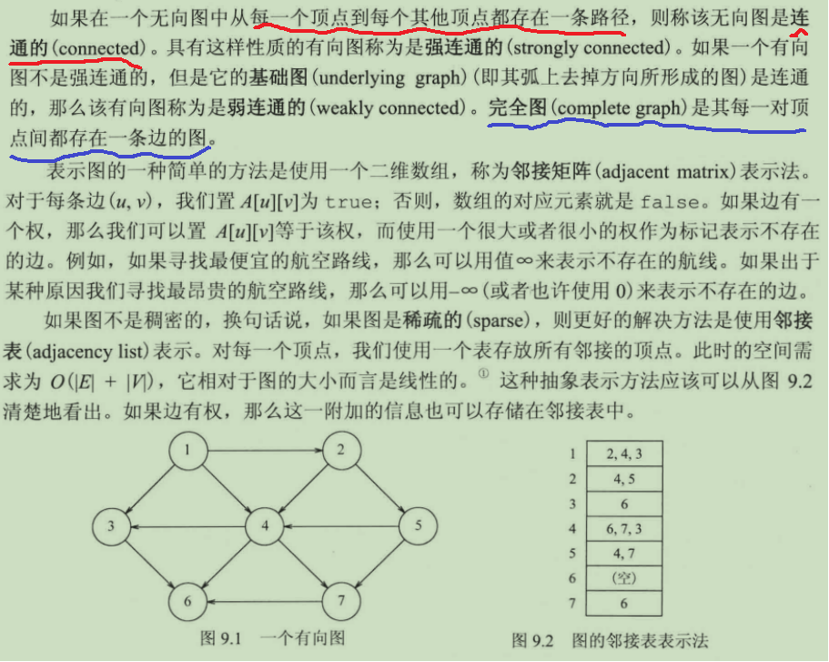
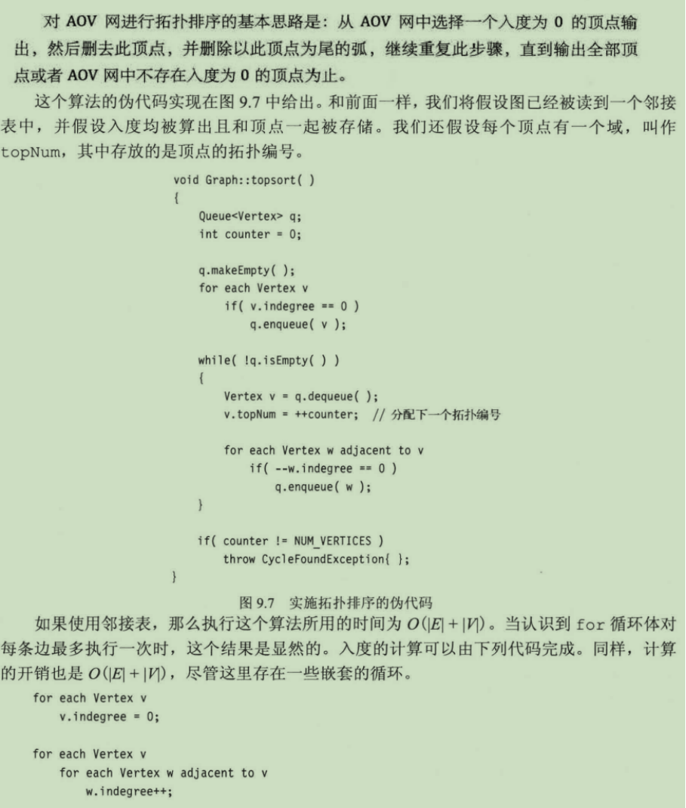
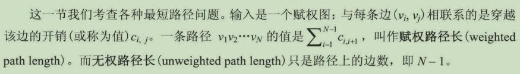
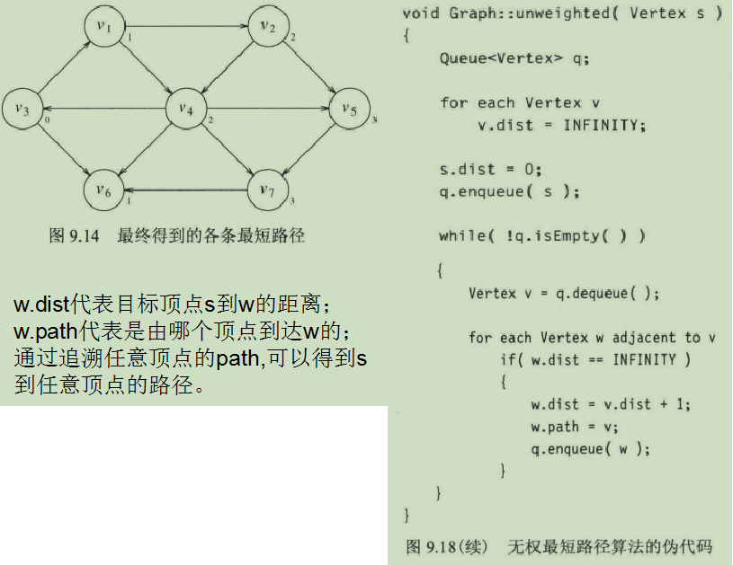
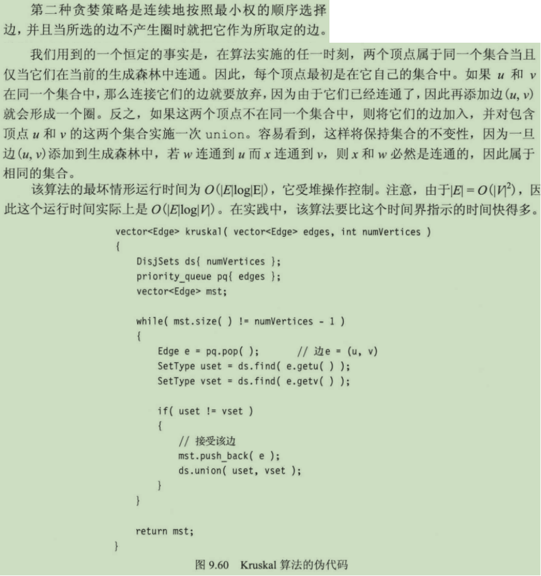

图论算法
关于图

1、n个顶点的无向完全图有n(n-1)/2条边。 2、对于无向图G(V,E)，如果边（v,v'）∈E，则称顶点v和v’互为邻接点（Adjacent）,即v和v'相关联。 边(v,v')依附 (incident) 于顶点v和 v', 或者说（vv'）与顶点v和 v'相关联。 顶点v的度(Degree)是和v关联的边的数目，记为TD(v)。在无向完全图中，各顶点的度和等于边数的2倍。 3、在有向图中，如果任意两个顶点之间都存在方向相反的两条弧，则称该图为有向完全图。 n个顶点的有向完全图有n(n-1)条边。 以顶点v为终点的边的数量称为v的入度（InDegree）,ID(v); 以顶点v为起点的边的数量称为v的出度（OutDegree）,OD(v); 顶点v的度 TD(v) = ID(v) + OD(v)。 在有向完全图中，各顶点的入度和等于出度和，等于弧的数目。
BFS && DFS
struct Vertex{
Vertex(std::string str): name(str){}
std::list<std::pair<Vertex*, int>> adj; //邻接表, int型参数代表边上权值
std::string name;
bool known=false;
//在dijkrstra和prim算法中有用
int dist=INT32_MAX;
Vertex* prev=nullptr;
};
void dfs(Vertex& ver){
std::cout<<ver.name<<" ";
ver.known=true;
for(std::pair<Vertex*, int>& p:ver.adj){
Vertex& v= *(p.first);
if(!v.known)//节点尚未访问
dfs(v);
}
}
void bfs(Vertex* ver){
std::queue<Vertex*> q;
ver->known=true;
q.push(ver);
while(!q.empty()){
Vertex* head=q.front();
std::cout<<head->name<<" ";
q.pop();
for(auto& p: head->adj){
if(!p.first->known){
p.first->known=true;
q.push(p.first);
}
}
}
}
拓扑排序
在一个表示工程的有向图中，用顶点表示活动，用弧表示活动之间的优先关系，这样的有向图为顶点表示活动的网，我们称为 AOV 网(Activity on Vertex Network)。
若一个由图中所有点构成的序列A满足：对于图中的每条边(x, y)，x在A中都出现在y之前，则称A是该图的一个拓扑序列。
AOV网描述了活动之间的制约关系。
拓扑排序，其实就是对一个有向图构造拓扑序列的过程。构造时会有两个结果，如果此网的全部顶点都被输出，则说明它是不存在环(回路)的 AOV； 如果输出顶点数少了，说明这个网存在环(回路)，不是 AOV网。

/* 输入: numCourses=4, prerequisites=[[1,0],[2,0],[3,1],[3,2]]*/
// 基于DFS
class Solution {
private:
vector<vector<int> > edges;
vector<int> ans_stack;
vector<int> visited;
bool valid=true;
void dfs(int u) {
visited[u] = 1;//标记已经访问
for (int v: edges[u]) {
if (visited[v] == 0) {
dfs(v);
if (!valid) {
return;
}
}
else if (visited[v] == 1) { //遇到已经访问的节点，说明存在环
valid = false;
return;
}
}
visited[u] = 2; //该节点正常
ans_stack.push_back(u);
}
public:
vector<int> findOrder(int numCourses, vector<vector<int>>& prerequisites) {
edges.resize(numCourses);
visited.resize(numCourses);
for (const auto& info: prerequisites) {
edges[info[1]].push_back(info[0]);
}
for (int i = 0; i < numCourses && valid; ++i) {
if (!visited[i]) {//i节点尚未访问，进入dfs
dfs(i);
}
}
if(ans_stack.size() != numCourses) return {};
reverse(ans_stack.begin(), ans_stack.end());
return ans_stack;
}
};
//基于BFS
class Solution {
public:
vector<int> findOrder(int numCourses, vector<vector<int>>& prerequisites) {
vector<vector<int> > edges(numCourses);
vector<int> indegrees(numCourses, 0);
for(auto& v:prerequisites){
edges[v[1]].push_back(v[0]);
++indegrees[v[0]];
}
queue<int> q;
for(int i=0;i<numCourses;i++){
if(indegrees[i]==0) q.push(i);
}
vector<int> ans;
while(!q.empty()){
int node = q.front();
q.pop();
ans.push_back(node);
for(auto& adj:edges[node]){
--indegrees[adj];
if(indegrees[adj]==0)q.push(adj);
}
}
if(ans.size()<numCourses)return{};//存在环
return ans;
}
};
最短路径

目前，还不存在找出顶点v到任意一个顶点路径要比找出顶点v到所有顶点路径更快的算法

- Dijkstra算法
对于赋权图，采用Djkstra算法(贪婪算法的一个范例)更优，时间复杂度为O(E+V^2)=O(V^2);不适用权值为负；
若使用最小堆来寻找最近节点，则复杂度为O(Elog V + Vlog V)=O(Elog V).
void printPath(Vertex v){
if(v.prev){
printPath((*v.prev));
std::cout<<" to ";
}
std::cout<<v.name;
}
void dijkrsta(std::vector<Vertex*>& vertexs, Vertex* start, Vertex* target){
start->dist=0;
bool visitedAll = true;
while(true){
//寻找未被标记过的距离start最近的节点, 可以通过构建最小堆来进行优化
//第一次找到的即是start本身
int minDist = INT32_MAX, minIndex=0;
for(int i=0;i<vertexs.size();i++){
if(!vertexs[i]->known && vertexs[i]->dist<minDist){
minDist=vertexs[i]->dist;
minIndex=i;
visitedAll=false;
}
}
//全部标记过，跳出
if(visitedAll) break;
Vertex* front=vertexs[minIndex];
front->known=true; //标记节点已被访问
for(auto& pp:front->adj){//遍历front的未被访问的邻居节点pp
if(!pp.first->known){
int neighbor_cost=pp.second; //front到相邻节点的距离
if(front->dist+neighbor_cost<pp.first->dist){ //pp.first->dist代表之前由start直接到pp的距离
//说明经由front到达pp距离更小
//更新start到pp所需的距离
pp.first->dist=front->dist+neighbor_cost;
pp.first->prev=front;
}
}
}
visitedAll=true;
}
printPath(*target);
}
- Floyd算法 计算任意两个顶点之间的最短距离，即使权值为负也可。适合稠密图
void floyd(std::vector<std::vector<std::pair<int, int>> >&adjacents){
//adjacents存储所有节点的相邻节点，若没有，则adjacent[i]={};
//pair<相邻节点，边的权值>
int numVertexs = adjacents.size();
std::vector<std::vector<int> > edges(numVertexs, std::vector<int>(numVertexs, INT32_MAX/2));
for(int i=0;i<numVertexs;i++){
edges[i][i] = 0;
for(auto& p:adjacents[i]){
edges[i][p.first] = p.second;
}
}
for(int k=0;k<numVertexs;k++){
for(int i=0;i<numVertexs;i++){
for(int j=0;j<numVertexs;j++){
edges[i][j] = std::min(edges[i][j], edges[i][k]+edges[k][j]);
}
}
}
//edge存储了任意两个顶点间的最小加权路径长度
}
最小生成树
连通图的生成树：是一个极小连通子图，它含有图中全部的n个顶点，但只有足以构成一棵树的n-1条边。
此外把构成连通网的最小代价生成树称为最小生成树，即各边权值和最小。
一般通过Prim和Kruskal算法构建Minimum Spanning Tree.
- Prim
//Prim与Dijkstra过程基本相同，只不过修改了更新dist的规则
//Prim是在无向图上运行的，所以每一条边都存在于两个链表中
void Prim(std::vector<Vertex*>& vertexs, Vertex* start){
start->dist=0;
bool visitedAll=false;
/*
此时Vertex中的dist代表由所有konwn=true的顶点到该节点中的最小距离，
具有最小距离的那个节点就是prev
*/
while(true){
//寻找未被标记过的距离start最近的节点
int minDist = INT32_MAX, minIndex=0;
for(int i=0;i<vertexs.size();i++){
if(!vertexs[i]->known && vertexs[i]->dist<minDist){
minDist=vertexs[i]->dist;
minIndex=i;
visitedAll=false;
}
}
//全部标记过，跳出
if(visitedAll) break;
Vertex* front=vertexs[minIndex];
front->known=true;
for(auto& pp:front->adj){
if(!pp.first->known){
int neighbor_cost=pp.second;
if(neighbor_cost<pp.first->dist){ //这里与Dijkstra不同
pp.first->dist=front->dist+neighbor_cost;
pp.first->prev=front;
}
}
}
visitedAll=true;
}
std::cout<<"Minimum Spanning Tree:"<<std::endl;
for(auto& v:vertexs){
if(v->prev)
std::cout<<"("<<v->prev->name<<","<<v->name<<")"<<std::endl;
}
}
- Kruskal
